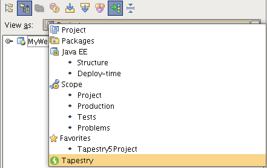
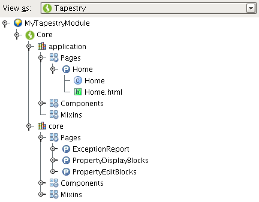
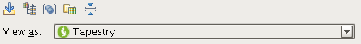

| Tapestry View |
|
|
In this view you can browse your Tapestry application not in terms of classes and templates but in terms of pages, components, services, etc. This section covers the following features:
This view is available to every project that has at least one web module with Tapestry support. It can be accessed like any other project view from the View as selection box.  The view let's you browse your Tapestry modules in a tree structure that shows you all Tapestry elements like pages and components. 
Each element in the Tapestry View has a different icon so that it's easy to identify the type of element:
The toolbar provides some additional functionality that will also help each user customize it's look&feel: 
|